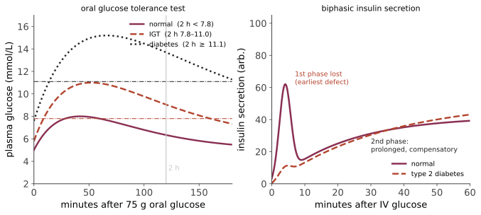

系统 IV · 内分泌与代谢（以糖尿病为主线）
内分泌学的逻辑几乎完全是第 03 页的控制论：每个轴都是一个带负反馈的回路。所以诊断的通用策略只有一条——同时测激素与它的调节者，看这一对读数落在哪个象限，即可定位病变在哪一层。
1. 内分泌诊断的通用逻辑
下丘脑 → 垂体 → 靶腺 → 激素 → 负反馈回下丘脑与垂体。
| 靶腺激素 | 促激素 | 定位 |
|---|---|---|
| ↓ | ↑ | 原发性（靶腺本身病变） |
| ↓ | ↓ 或不适当正常 | 继发性（垂体）/ 三发性（下丘脑） |
| ↑ | ↓ | 原发性亢进（负反馈正常工作） |
| ↑ | ↑ 或不适当正常 | 垂体分泌瘤或异位分泌（罕见但重要） |
"不适当正常"是内分泌学最需要品味的一个词：TSH 处于参考范围内本身不说明问题，要问"在这个 T4 水平下，TSH 应该是多少"。这与第 03 页"检验值正常不等于系统正常"是同一条原则。
动态试验的两条原则：怀疑功能亢进 → 做抑制试验（如地塞米松抑制试验查库欣）；怀疑功能低下 → 做刺激试验（如 ACTH 兴奋试验查肾上腺皮质功能）。
2. 糖代谢的正常生理
餐后：血糖↑ → β 细胞 GLUT2 摄取葡萄糖 → ATP/ADP↑ → 关闭 K_ATP 通道 → 去极化 → 电压门控 Ca²⁺ 内流 → 胰岛素胞吐。（磺脲类正是直接关闭 K_ATP 通道，第 15 页。）
胰岛素的作用：肌肉与脂肪 GLUT4 转位 → 摄取葡萄糖；肝 → 糖原合成↑、糖异生↓；脂肪 → 脂肪合成↑、脂解↓；总体是"储存"信号。
空腹：胰高糖素 + 皮质醇 + 生长激素 + 儿茶酚胺 → 糖原分解、糖异生、脂解与酮体生成。
肠促胰素效应（incretin effect）：口服葡萄糖引起的胰岛素分泌显著高于同等静脉葡萄糖——差额来自肠道分泌的 GLP-1 与 GIP。这个现象是 GLP-1 类药物的全部理论基础，也是"生理学观察 → 药物类别"的漂亮案例。
3. 糖尿病：两种截然不同的病
| 1 型 | 2 型 | |
|---|---|---|
| 机制 | 自身免疫破坏 β 细胞（IV 型超敏；抗 GAD、抗 IA-2、抗胰岛素抗体） | 胰岛素抵抗 + β 细胞功能进行性衰竭 |
| 遗传 | HLA-DR3/DR4 关联；同卵双生一致率约 50% | 遗传因素更强（一致率 > 70%），多基因 |
| 起病 | 多在青少年（但可任何年龄，LADA） | 多在成年（但儿童肥胖者渐增） |
| C 肽 | 低/测不到 | 正常或升高（代偿期） |
| 酮症倾向 | 高（DKA） | 低（高渗高血糖状态 HHS为主） |
| 治疗 | 必须胰岛素 | 生活方式 + 口服/注射药，晚期需胰岛素 |
2 型糖尿病的自然史（这是理解筛查与早期干预的关键）：胰岛素抵抗出现 → β 细胞代偿性高分泌（血糖仍正常，但已有高胰岛素血症）→ 代偿不足 → 餐后血糖先升高 → 空腹血糖升高 → 诊断。诊断时 β 细胞功能常已丧失约一半，且并发症可能已存在——这正是"检验值正常不代表系统正常"的代价。

胰岛素抵抗的机制（多因素，无单一解释）：异位脂质沉积（肌肉与肝内三酰甘油代谢中间体 DAG、神经酰胺干扰胰岛素信号）、脂肪组织的慢性炎症（M1 巨噬细胞浸润、TNF-α、IL-6，第 02 页脂肪即内分泌器官）、游离脂肪酸升高、线粒体功能与内质网应激。"肥胖 → 炎症 → 抵抗"这条链是本站线二与线五的交汇点。
并发症的两条通路：
- 微血管（高血糖是主因）：视网膜病变、肾病、神经病变。分子机制包括多元醇通路（醛糖还原酶 → 山梨醇蓄积）、晚期糖基化终末产物 AGEs、PKC 活化、氨基己糖通路，共同上游是线粒体过量超氧化物；
- 大血管（高血糖只是风险因子之一，血压与血脂同等重要）：冠心病、卒中、外周动脉病。
这个区分有决定性的临床后果：强化降糖显著减少微血管并发症，对大血管事件的效果则小得多且在部分试验中弊大于利（ACCORD 强化组死亡率升高）。所以"控糖到正常"不是普适目标——🔗 姊妹站第 16 页整页处理这场目标值之争。
急性并发症：
| DKA | HHS | |
|---|---|---|
| 典型 | 1 型 | 2 型（老年） |
| 胰岛素 | 绝对缺乏 → 脂解与酮体生成 | 相对缺乏，足以抑制脂解 |
| 血糖 | 常 < 600 | 常 > 600 |
| 酮体/酸中毒 | 有（高 AG 代酸） | 轻或无 |
| 渗透压 | 升高 | 显著升高 |
| 死亡率 | 较低 | 较高 |
DKA 处理的三个反直觉点：① 补液优先于胰岛素（容量不足是致命环节）；② 总体钾是缺的，即使血钾正常或偏高——胰岛素会把钾赶回细胞内，必须在补钾前确认血钾并密切监测；③ 不常规补碱（除非 pH 极低），因碱化可加重细胞内酸中毒并延缓酮体清除。
4. 甲状腺
轴：TRH → TSH → T4/T3。外周 T4 → T3 由脱碘酶完成，T3 是活性形式。
| 甲亢 | 甲减 | |
|---|---|---|
| 常见病因 | Graves（TSI 抗体，II 型超敏的激动型）、毒性结节、甲状腺炎（释放期） | 桥本甲状腺炎（抗 TPO/TG）、碘缺乏（全球最主要）、术后/放射碘后、药物（胺碘酮、锂） |
| 表现 | 怕热、消瘦、心悸、房颤、震颤、腹泻；Graves 特有：突眼、胫前黏液性水肿 | 怕冷、体重增加、便秘、乏力、黏液性水肿、反射松弛期延长 |
| 实验室 | TSH ↓、FT4 ↑ | TSH ↑、FT4 ↓ |
三个必须记住的临床要点：① 甲状腺功能亢进危象与黏液性水肿昏迷均为急症；② 亚临床甲减（TSH 轻度↑、FT4 正常）是否治疗有争议——多项 RCT 显示对老年人症状与结局无明显获益，🔗 姊妹站第 06 页用它做效应量判读；③ 正常甲状腺病态综合征（低 T3 综合征）：重症患者 T3 降低是适应性反应，不应补充甲状腺激素——这是"检验异常但不应干预"的重要例子。
甲状腺结节与癌：绝大多数结节为良性；乳头状癌最常见、预后好、经淋巴转移；滤泡状癌经血行转移；髓样癌来自 C 细胞、分泌降钙素、与 MEN2 相关；未分化癌预后极差。注意过度诊断问题：韩国的甲状腺癌筛查经历使发病率暴增而死亡率不变——这是过度诊断最著名的自然实验，🔗 姊妹站第 03 页详述。
5. 肾上腺
皮质三层三产物（"GFR — 盐、糖、性"）：球状带 → 醛固酮（受 RAAS 与血钾调控，不受 ACTH 主导）；束状带 → 皮质醇；网状带 → 雄激素前体。
皮质醇增多（库欣）：最常见原因是外源性糖皮质激素。内源性分：垂体 ACTH 瘤（库欣病，占内源性多数）、肾上腺自主分泌、异位 ACTH（小细胞肺癌）。表现：向心性肥胖、满月脸、水牛背、紫纹、近端肌无力、皮肤薄易瘀、高血糖、高血压、骨质疏松、免疫抑制。
肾上腺皮质功能不全：原发（Addison）——皮质醇与醛固酮均缺，ACTH 升高致色素沉着，低钠 + 高钾 + 低血压；继发（垂体/外源激素抑制）——醛固酮基本正常（受 RAAS 调控），无色素沉着、无高钾。这一对区别可以从"哪个激素调控哪一层"直接推出，是内分泌推理的范例。
先天性肾上腺皮质增生：21-羟化酶缺乏最常见——皮质醇与醛固酮合成受阻 → ACTH 代偿性升高 → 前体分流至雄激素 → 女婴外生殖器男性化 + 失盐危象。
嗜铬细胞瘤："10% 规则"（双侧、恶性、肾上腺外、儿童、家族性各约 10%——现代认为遗传比例远高于 10%，可达 30–40%）。发作性头痛、心悸、出汗、高血压；术前必须先 α 阻断再 β 阻断（第 15 页）。
原发性醛固酮增多症：在高血压人群中的比例被长期低估（可能 5–10%），且血钾常正常。筛查用醛固酮/肾素比值。重要性在于它可手术治愈或用醛固酮拮抗剂特异治疗，且其心血管损害超过同等血压的原发性高血压。
6. 骨与钙代谢
PTH：低钙 → PTH ↑ → 骨吸收↑、肾重吸收钙↑ 排磷↑、激活 1α-羟化酶 → 1,25-(OH)₂D ↑ → 肠吸收钙↑。"PTH 升钙降磷，维生素 D 钙磷双升"——这一句能推出大部分钙磷紊乱的模式。
| 钙 | 磷 | PTH | |
|---|---|---|---|
| 原发性甲旁亢 | ↑ | ↓ | ↑ |
| 恶性肿瘤性高钙（PTHrP） | ↑ | ↓ | ↓（被抑制） |
| 甲旁减 | ↓ | ↑ | ↓ |
| 维生素 D 缺乏 | ↓/正常 | ↓ | ↑（继发性） |
| CKD | ↓ | ↑ | ↑↑ |
高钙血症的两大原因是原发性甲旁亢（门诊）与恶性肿瘤（住院）——这条流行病学分布本身就是有用的先验（🔗 姊妹站第 01 页的贝叶斯框架）。
骨质疏松：骨吸收 > 骨形成。危险因素：绝经（雌激素撤退 → 破骨细胞活性↑）、老龄、糖皮质激素、吸烟、低体重、制动。药物：双膦酸盐（抑制破骨细胞；注意颌骨坏死与非典型股骨骨折的罕见风险）、地舒单抗（抗 RANKL；停药后骨密度快速丢失并有多发椎体骨折风险 → 不可随意停用）、特立帕肽（PTH 类似物，间歇给药反而促进骨形成——一个漂亮的剂量-时程依赖现象）、罗莫佐单抗。
7. 肥胖与代谢综合征
能量平衡的调控是稳态回路而非意志问题：瘦素（脂肪分泌，向下丘脑报告脂肪储量）、胃饥饿素 ghrelin（胃分泌，促食欲）、GLP-1/PYY（肠源性饱腹信号）、胰岛素。减重后瘦素下降、ghrelin 上升、静息代谢率下降超过体重预期 —— 身体主动对抗减重，这是复胖率高的生理学原因，而不是"缺乏毅力"。
代谢综合征（腹型肥胖 + 高血糖 + 高血压 + 高 TG + 低 HDL）作为一个诊断标签存在争议——它是否比各组分单独评估提供更多信息，证据并不强。本站按医学院体例列出，同时标明这一争议。
GLP-1 受体激动剂用于肥胖是当前变化最快的领域：司美格鲁肽与替尔泊肽在各自试验和适应证人群中可达到约 15–20% 级别的平均体重下降；以司美格鲁肽为主的 SELECT 试验还提供了特定高心血管风险、超重/肥胖人群的结局证据，不能把该结果自动外推到所有药物、剂量或人群。待解问题：停药后复胖、肌肉量丢失、长期安全性、可及性与成本。核对于 2026-08-02；这一段是本页保质期最短的部分。
参考与更新
- 最后审查：2026-08-02。 本节来源用于核验糖尿病、甲状腺、肾上腺、骨代谢、肥胖和 GLP-1/GIP 药物的证据边界；适应证、剂量、医保和批准状态按地区与最新标签变化。
- Standards of Care in Diabetes—2026 — ADA，2026：糖尿病诊断、药物与并发症管理。
- SELECT trial — Lincoff 等，NEJM，2023：司美格鲁肽在特定肥胖/超重心血管高风险人群中的心血管结局试验。
- Diagnosis of Cushing’s Syndrome — Endocrine Society：库欣综合征的诊断指南。
- ATA Professional Guidelines — American Thyroid Association：甲状腺疾病专业指南入口。
下一页：神经系统——卒中、癫痫与神经退行性疾病。